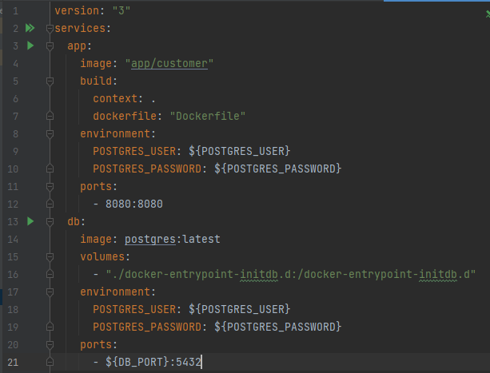
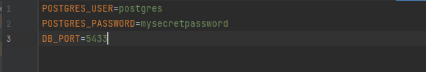

Instalacja¶
Ten rozdział pozwoli Ci na własnoręczne uruchomienie aplikacji przy pomocy docker-compose, kładąc również nacisk na wszystkie wymagania związane z instalacją usług / programów.
Wymagania¶
Zainstalowanie programu Docker Desktop, w skład którego wchodzi wiele przydatnych aplikacji takich jak docker-compose, Kubernetes itd.. dzięki czemu nie będzie potrzeby podejmowania się oddzielnej instalacji poszczególnych komponentów.
Aplikacja w wersji na różne systemy operacyjne dostępna jest na stronie z dokumentacją.
Zainstalowany Windows Subsystem for Linux 2 wraz z preferowaną dystrybucją Linuxa.
Instalacja i uruchomienie docker-compose¶
Warning
Zakłada się, że poprawnie skonfigurowano już pliki Dockerfile oraz application.properties jako że stanowią one odrębne zagadnienie.
Warning
Poniższa instrukcja dotyczy konfiguracji i instalacji aplikacji składającej się z dwóch kontenerów, jednego zawierającego bazę danych Postgresql, drugiego zawierającego aplikację spring boot wchodzącą w skład tego projektu. Celem konfiguracji innych wielokontenerowych aplikacji zalecane jest odwołanie się do dokumentacji.
Kroki, które należy podjąć celem skonfigurowania i uruchomienia aplikacji spring boot wraz z bazą danych postgresql przy użyciu docker-compose:
Utwórz plik docker-compose.yaml, a następnie dodaj go do katalogu nadrzędnego projektu.
Note
Zwróć uwagę na wcięcia występujące w tym pliku: są istotne i nie powinno się ich pomijać. Istotne tagi występujące w tym pliku konfiguracyjnym: - app: kontener stanowiący część “aplikacyjną”, w jego skład wchodzą:
image: odnośnik do nazwy obrazu utworzonego w docker
build: tag zawierający w sobie dane związane z budowaniem aplikacji
context: kontekst aplikacji (nadrzędny folder projektu) -> w tym wypadku ‘.’ ,czyli katalog, w którym znajduje się plk
dockerfile: nazwa pliku Dockerfile zawierającego dana konfiguracyjne niezbędne do zbudowania aplikacji w kontenerze.
environment: tag zawierający w sobie dane dotyczące komunikacji aplikacji ze środowiskiem, w którym będzie się znajdowała
postgres_user: nazwa użytkownika bazy postrgresql -> występuje tu ${POSTGRES_USER} stanowiący odwołanie do zmiennej w pliku .env
postgres_password: hasło do bazy postgresql
ports: porty na których będzie można komunikować się z aplikacją
db: kontener stanowiący część “bazodanową”, jedynym nowym tagiem jest tutaj:
volumes: stanowiący zbiór volumenów, które należy podlinkować do kontenera w momencie jego tworzenia.
Utwórz plik .env stanowiący zbiór zmiennych, które wykorzystywane są w pliku w miejscach w których występuje składnia: ${NAZWA_ZMIENNEJ}
Jak można zauważyć, w pliku .env znajdują się dokładnie te same zmienne, z których korzystano w pliku docker-compose.yaml, z tym że tutaj zostały im przypisane konkretne wartości. W tym wypadku dane do logowania do bazy wraz z portem, pod którym ma ona być dostępna.
Po odpowiednim skonfigurowaniu obydwu plików pozostało już tylko zbudować obrazy komendą docker-compose build, a następnie uruchomić aplikację docker-compose up.
{kind=link}
{kind=link}
Naszym oczom powinien ukazać się log z konsoli wskazujący na równoczesne uruchomienie się dwóch aplikacji składowych, bazy danych oznczonej na screenshocie tagiem db_1 oraz aplikacji spring boot oznaczonej tagiem app_1
{kind=link}